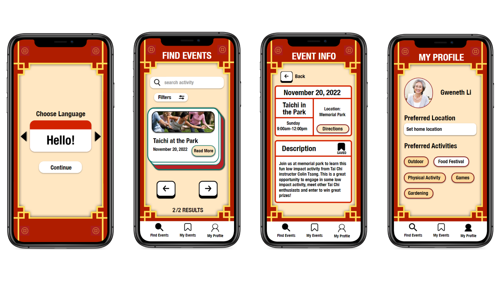

Team
Owen
Matthew
Role
UX Research
UX Design
Tools
Figma
Protopie
Timeline
4 weeks, Fall 2022
Project Brief
In this academic project, teams were tasked with designing a new app to address a target audience: seniors 75 years or older.
Problem
It is difficult for older Chinese immigrants to find community.
As important as community is in East Asian culture, many older Chinese immigrant adults struggle to form meaningful social interactions due to language barriers and cultural differences.
Solution
An accessibly designed app for older Chinese immigrants to find culturally relevant events.
Our team created an app focused on accessible design, that allows older Chinese immigrants to discover and participate in culturally relevant local events, in order build community through events that remind them of home.
Before getting into the details of the design process, here is an preview of the app's finished screens.
Key Screens of Final Prototype
Discovery
User Research
Secondary Research and Personal Experience
We started off researching potential problem spaces for adults aged 75 years and older more generally. What stood out was research supporting the growing epidemic of loneliness among older adults, and the impact it has on overall health.
Drawing from our team's shared experience as second-generation Chinese immigrants living with our grandparents in Canada, I recognized the challenges they face from being separated from their communities back home. This inspired us to create an app to address their needs.
Discovery
User Personas
To begin, the team created two personas to better understand our user group better.
Define
Problem Statement
How can we create an app that lowers loneliness among older Chinese immigrants while focusing on being culturally relevant and accessibie for older adults?
Ideate
App Idea
We decided that an event finding app to help connect older Chinese immigrants to local, culturally relevant activities and events would help strengthen their sense of community and lower their sense of loneliness.
Wireframe Sketches
The team created wireframe sketches to explore what essential pages and accessible features we would need to incorporate into the app. With our user personas' goals and pain points in mind, I listed what we would need:Accessible features
Essential Pages
These were my sketches:
Low-Fidelity Prototype
After the team decided on which ideas to move forward with, I created mid-fidelity wireframes on Figma, which we then made into a working prototype on Protopie:
Test
Usability Testing to Validate Designs
Who
6 Chinese immigrants over 70 years old living in Vancouver
How
In person with our team members as facilitators
What
Think aloud tasks, Post-test structured interview
Why
We wanted to get direct feedback from users to help us improve the accessibility of our design.
Main Insights
4 main areas of improvement were needed to make our design more accessible for older adults:
1) Users found font size either too small or too large.
2) Swipe interaction is more intuitive than tap.
3) Event filter feature went unused because it required extra learning.
4) 'My Events' Page had information overload.
Back to Ideate
Reiterating the Design
Personalizing the user interface to Chinese immigrants with Chinese motifs
After receiving feedback from our teaching assistant, we realized that the interface did not look like it was designed with Chinese immigrants specifically in mind, so we brainstormed ways we could make the interface feel more familiar.
Improving pain points from usability testing
Usability testing insights allowed us to make changes to our design to better suit user needs before delivering the final prototype...
Prototype
Final Design Mockup


Reflection
What I learned
One of the most significant learnings was the importance of designing with accessibility in mind. Incorporating larger font sizes, high contrast colors, and intuitive navigation features not only enhances user experience but also ensures inclusivity for all users, especially those with diverse needs.
Things that can be improved
Due to time and resources constraints, we placed more importance on creating accessible and culturally aware designs than on having elegant visual design, so if I were to continue this project the next steps would be elevating the visual design.